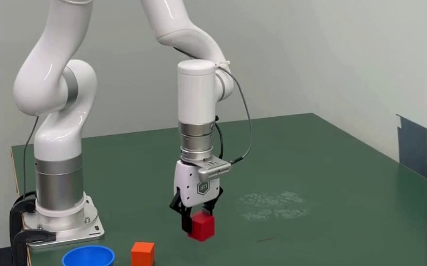
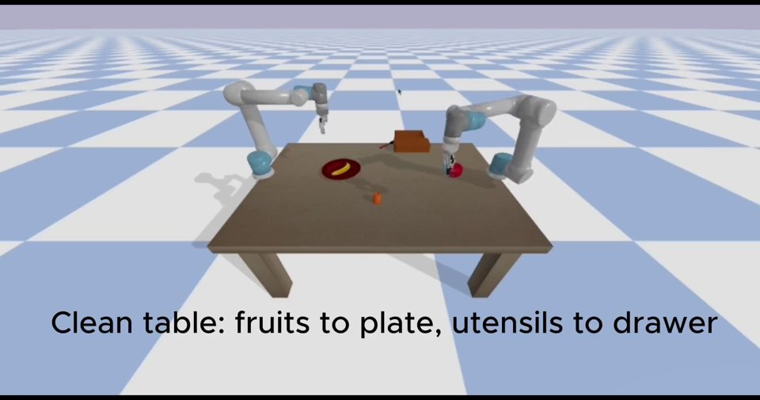

Research directions
Research
Perception, representation and learning for robots that operate in the real world.
Active and Semantic SLAM
Building meaningful representations of the world for autonomous robots. Our research spans probabilistic semantic mapping and data association, robust visual and RGB-D SLAM in dynamic scenes, Gaussian splatting, and active exploration with UAVs.
Selected work
- BPDA-GMM: Bayesian Probabilistic Data Association via Gaussian Mixture Models for Semantic SLAMIEEE Robotics and Automation Letters (RA-L) · 2026
- Semantic Visual Simultaneous Localization and Mapping: A survey on state of the art, challenges, and future directionsRobotics and Autonomous Systems · 2026
- SR-SLAM: Scene reliability-based RGB-D SLAM in diverse environmentsRobotics and Autonomous Systems · 2026
- Con-DSO: Learning Short-Horizon Consistency Priors for RGB-D Direct Sparse OdometryIEEE Transactions on Multimedia · 2026
- Monocular vSLAM for Colonoscopy: Recent Advances, Benchmarking, and Future PerspectivesRobotics and Autonomous Systems · 2026
- A Survey on Collaborative SLAM with 3D Gaussian SplattingAutonomous Robots · 2026

Robust Perception and Autonomous Navigation
Perception that keeps working under poor lighting, clutter and sensor noise, connected to safe decisions. We work on illumination-robust visual front-ends, multisensor fusion for localization and obstacle avoidance, semantic-aware path planning for UAVs, and social navigation with motion prediction around people.
Selected work
- IRAF-SLAM: An Illumination-Robust and Adaptive Feature-Culling Front-End for Visual SLAM in Challenging EnvironmentsEuropean Conference on Mobile Robots (ECMR) · 2025
- Efficient Human-Robot Interaction via Deep Perception and flexible Motion PlanningInternational Conference on Interactive Collaborative Robotics (ICR) · 2025
- S3M: Semantic Segmentation Sparse Mapping for UAVs with RGB-D CameraIEEE/SICE International Symposium on System Integration (SII) · 2024
- Toward Integrating Semantic-aware Path Planning and Reliable Localization for UAV OperationsInternational Conference on Control, Automation and Systems (ICCAS) · 2024
- Enhancing Social Robot Navigation with Integrated Motion Prediction and Trajectory Planning in Dynamic Human EnvironmentsInternational Conference on Control, Automation and Systems (ICCAS) · 2024
- Underwater Image Enhancement for Depth Estimation via Various Image Processing TechniquesInternational Conference on System Science and Engineering (ICSSE) · 2024

Robot Learning and Human–Robot Interaction
Learning robot behavior from demonstrations, video and interaction. We study imitation learning from human video, reinforcement learning with stable policy optimization, object-centric video understanding for manipulation commands, and humanoid interaction through gestures, speech and language models.
Selected work
- ROCC: Reliability-Gated Obstruction Reasoning with Certified DAG for Clutter GraspingIEEE International Conference on Robotics and Automation (ICRA) · 2027
- Decoupled Object-Centric Video Understanding for Generating Robotic Manipulation CommandsInternational Conference on Control, Automation and Systems (ICCAS) · 2026
- OWaveSync: Constrained Wavefront Optimization for Synchronized Co-Speech Gestures in Humanoid RobotsInternational Conference on Control, Automation and Systems (ICCAS) · 2026
- OSDAG: Online Scheduling for Efficient Multi-Robot CollaborationInternational Conference on Control, Automation and Systems (ICCAS) · 2026
- Hybrid TD3: Overestimation Bias Analysis and Stable Policy Optimization for Hybrid Action SpaceIEEE International Conference on Automation Science and Engineering (CASE) · 2026
- Human-to-Robot Interaction: Learning from Video Demonstration for Robot ImitationAutonomous Robots · 2026

Agentic Robotics and Industrial Vision
Robots that plan, schedule and coordinate tasks as agents, and vision systems for industry. Work includes online scheduling for multi-robot collaboration, monocular 3D object localization for industrial robot vision, and super-resolution methods for detecting tiny defects on printed circuit boards.
Selected work
- OSDAG: Online Scheduling for Efficient Multi-Robot CollaborationInternational Conference on Control, Automation and Systems (ICCAS) · 2026
- ESRPCB: an Edge guided Super-Resolution model and Ensemble learning for tiny Printed Circuit Board Defect detectionEngineering Applications of Artificial Intelligence · 2025
- M-Calib: A Monocular 3D Object Localization using 2D Estimates for Industrial Robot Vision SystemJournal of Automation, Mobile Robotics and Intelligent Systems (JAMRIS) · 2025
- E2DSR: Edge-Enhanced Representation for Deep Super-Resolution in Machine Vision ApplicationsREV Journal on Electronics and Communications · 2025
- Refined 3D Object Localization with Monocular Camera using Depth Estimation and Geometric RefinementInternational Conference on Interactive Collaborative Robotics (ICR) · 2025

Connected research interests
We are also interested in lifelong SLAM, robot dynamics learning, model-based reinforcement learning and learning from demonstration. Modeling uncertainty in map representations and robot dynamics is central to our interests in safe, active planning and control.